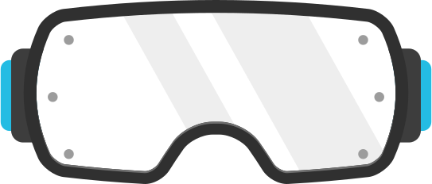

<div ng-class="$ctrl.bgClass" class="pa4">
  <div class="tc pt3" ng-transclude="icon" ng-if="$ctrl.hasIcon"></div>
  <div class="mv0 pt3 f2 f1-ns measure-narrow center tc ttu w-90-m w-80-l" ng-transclude="heading" ng-if="$ctrl.hasHeading">{{$ctrl.heading}}</div>
  <div class="center w-80-l pt4" ng-transclude="content" ng-if="$ctrl.hasContent"></div>
  <p class="tc f4 mt measure-narrow center lh-copy" ng-transclude="actionText" ng-if="$ctrl.hasActionText"></p>
  <a href="javascript:;" class="action-btn measure-narrow center" ng-click="$ctrl.openModal()" ng-transclude="actionBtnText" ng-if="$ctrl.hasActionBtnText && !$ctrl.connected"></a>
  <a href="javascript:;" class="action-btn action-btn-disabled measure-narrow center" ng-if="$ctrl.hasActionBtnText && $ctrl.connected">Thanks for connecting!</a>

  <!--<div class="pa2 p-medium absolute top-0">-->
  <!---->
  <!--</div>-->
</div>
